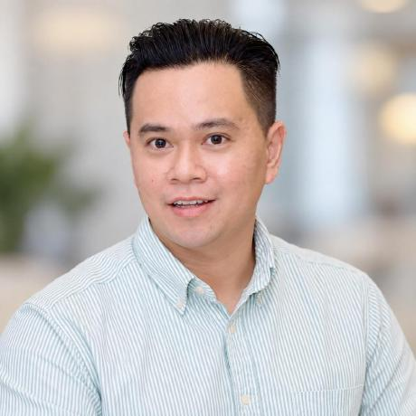
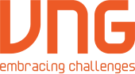
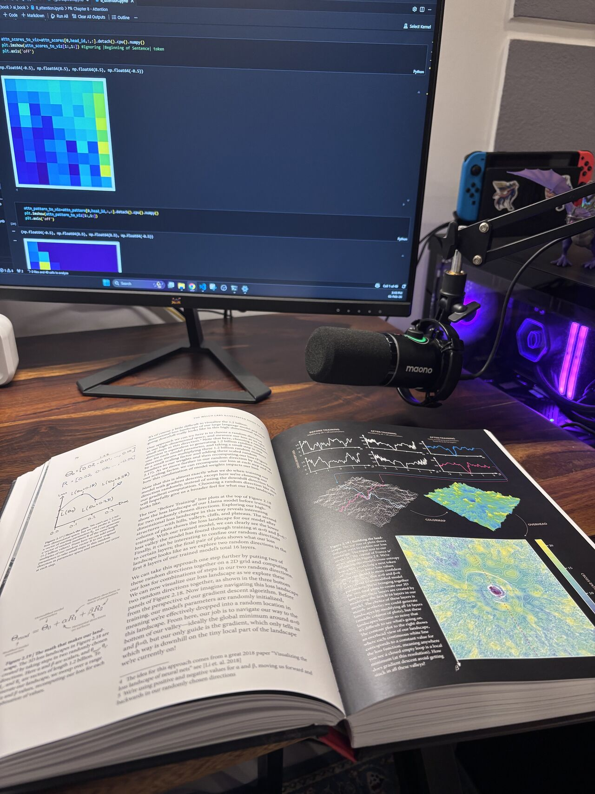
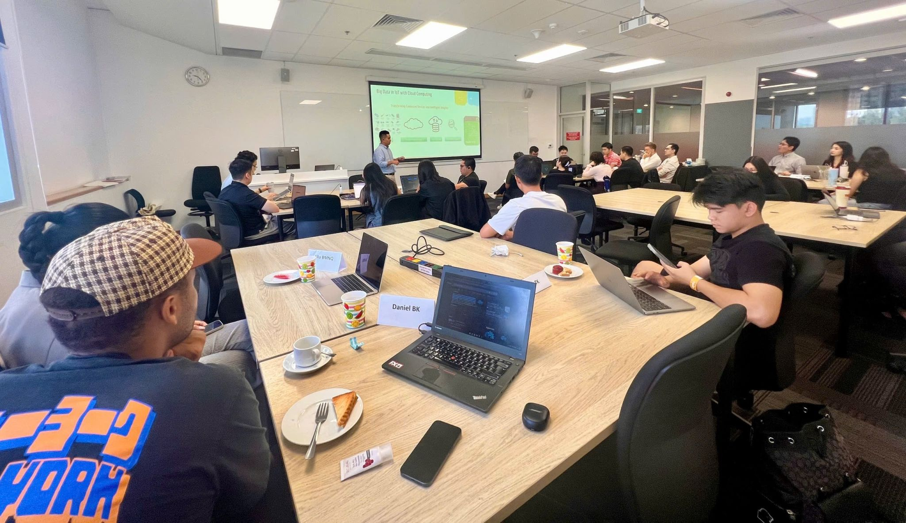
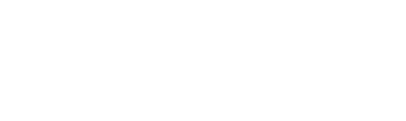

ENGINEER. BUILDER. TEAM LEADER.
Curiosity into code.
Ideas into impact.
I’m Khoa. I build useful data and AI systems—and bring people together to make them work.
From field engineering across five countries to regional analytics leadership and AI product development. Still learning. Still hands-on.
Technical depthCross-cultural leadershipProduct thinking

Make it useful.
A lot of curiosity.
field engineering journey
across functions & cultures
Asian Institute of Technology
EXPERIENCE, BUILT OVER TIME

THE EXPERIENCES THAT SHAPED THE WORK
A career is more
than a timeline.
Changing fields. Working across cultures.
Learning deeply enough to explain it simply.

01 / CHANGING FIELDS
A different field.
The same curiosity.
How daily coding, projects, and formal study supported a move from oil and gas into data.
Read the story →02 / LEARNING BY BUILDING
From a master’s thesis
to working software.
Learning the fundamentals, testing assumptions, and bringing research into an application.
Read the story →
03 / WORKING WITH PEOPLE
Make the technical
understandable.
Connecting engineers, business stakeholders, and people with different perspectives.
Read the story →SELECTED BUILDS & EXPLORATIONS
Open a project.
See the thinking.
The problem, the build, and what I learned.
Research, prototypes, and coursework—clearly labeled.
Khoa Pham
Data & AI product development · Engineering · Leadership
pntkhoa@gmail.com · github.com/KeonPham · linkedin.com/in/khoapnt
EXPERIENCE & CONTRIBUTION
Hands-on roots.
A broader perspective.
Data & AI Product Manager
VNG Corporation
Data and AI products, agentic workflows, and tools for how people work. Since May 2026.
- Bringing hands-on engineering experience into data and AI product development.
- Connecting the technical possibilities of AI with the way people use products and make decisions.
APAC Data Analytics Manager
HEINEKEN
Leading data engineers and business analysts, aligning regional and global stakeholders, and translating manufacturing questions into data use cases.
Lead: Aug 2022–Dec 2024 · Manager: Jan 2025–Apr 2026- Led data engineers and business analysts working on manufacturing analytics across APAC.
- Worked with regional and global stakeholders to define use cases, communicate trade-offs, and align delivery.
- Connected engineering, operations, and governance considerations in regional data work.
Data Engineer
FPT Software · Airbus Skywise
PySpark, SQL, and AWS pipelines for Airbus France, with a focus on lineage and reliable delivery.
- Built data engineering experience within the Airbus Skywise environment.
- Worked with distributed stakeholders to translate data needs into dependable transformations and pipelines.
General Field Engineering
Baker Hughes
Real-time operational data and client coordination in Vietnam, Oman, Malaysia, the UAE, and Australia.
- Applied an engineering approach to field operations: observe the system, work with evidence, and solve problems within real constraints.
- Coordinated with clients and colleagues across countries, working cultures, and technical backgrounds.
A HABIT OF GOING DEEPER
Education &
Certifications.
Academic foundations, applied programs,
and a commitment to keep learning.
Asian Institute of Technology
2024–2025 · Thailand
Master of Science (Professional)
Data Science and Artificial Intelligence Applications
3.94 / 4.00GPA
1stIn cohort
First Class AwardProject graded Excellent

VNU–HCM University of Science
2008–2012 · Vietnam
Bachelor of Science in Geology
Petroleum Geology focus
7.75 / 10GPA
Top 3In faculty
SPE Vietnam Scholarship · 2011
Technical credentials, language proficiency, professional learning and mentoring recognition.
LinkedIn records ↗